Introduction
What E2C simulates
E2C is a visual simulator for building a virtual IoT–edge–cloud continuum. It lets you organize computing resources and experiment with how tasks are routed across computing tiers based on the task workload and each machine’s capabilities.
An IoT device produces tasks. Edge or cloud machines process those tasks. Direct connections and load balancers determine which machines can receive work, while scheduling policies decide how each eligible task is assigned.
Basic terminology
| Term | Meaning |
|---|---|
| IoT device | A connected device, such as a camera or sensor, that generates tasks for machines. |
| Edge computing | Processing that happens near the device generating the data. |
| Cloud computing | Processing that happens in a remote data center. |
| Edge Space | A canvas group for machines that represent processing close to devices. |
| Cloud Space | A canvas group for organizing machines that represent cloud resources. |
| Machine | A computing resource that receives and processes incoming tasks. |
| Load balancer | A routing node that distributes incoming tasks across connected machines. |
| Task arrival window | Start Time and End Time define when an IoT device can generate tasks. |
| Distribution | The pattern used to place task arrivals inside the configured time window. |
Getting started
Build a basic IoT system
-
Add an Edge Space and machine
Drag an Edge Space onto the canvas, then drag a machine inside the space.
-
Add an IoT device
Drag an IoT Device onto the canvas next to the machine.
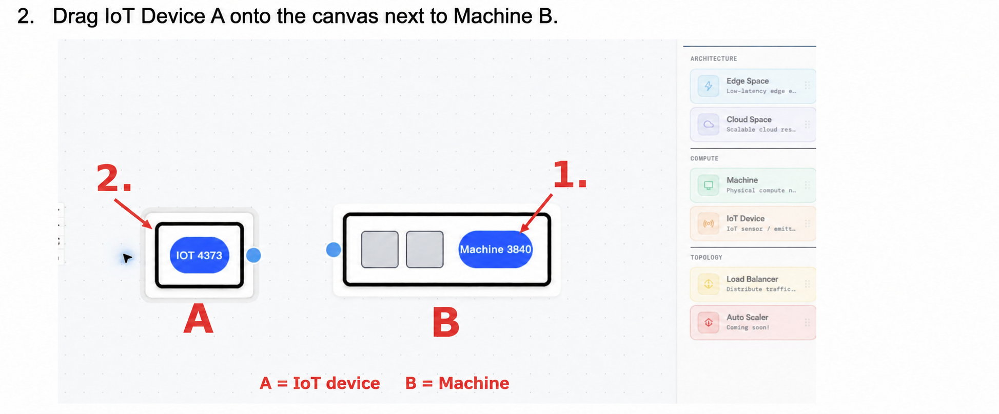
-
Configure the task workload
Open the IoT device’s properties and select Edit. Set Num Tasks to 10, Start Time to 0, End Time to 15, and Distribution to uniform. Save the changes.
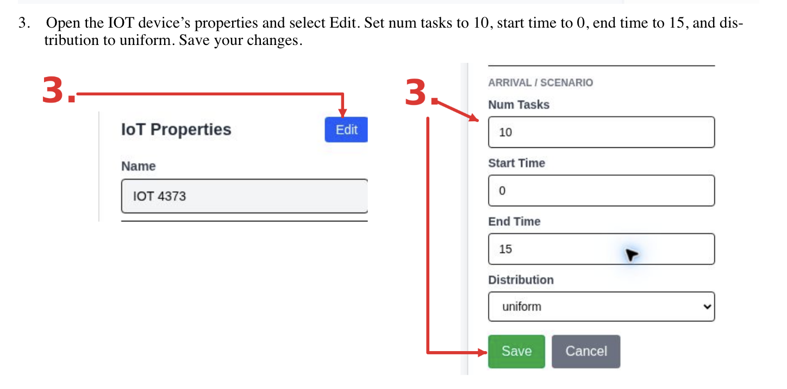
-
Review the machine
Open the machine’s properties. Keep the default values for the first run.
-
Connect the devices
Drag from the IoT device’s blue endpoint to the machine’s blue endpoint.
-
Run and review
Press the green Play button. Watch simulated time and incoming tasks, then open Reports when the simulation finishes. You can also save the project from the File menu.
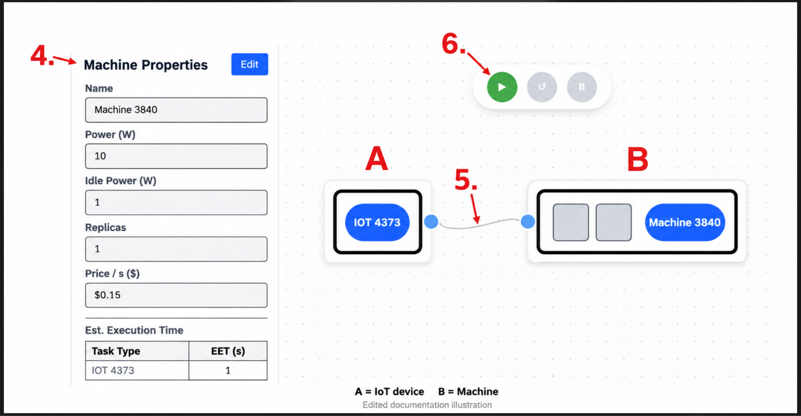
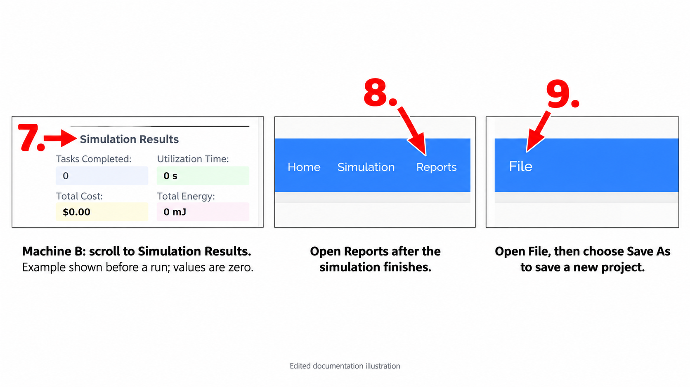
Configure the system
Define machine behavior
Select a machine and choose Edit. Start from a CPU, GPU, ARM, or Cloud VM preset, then adjust the resource values for your scenario and save the changes.
| Setting | Purpose |
|---|---|
| Power W | Power used while the machine processes tasks. |
| Idle Power W | Power used when the machine is not processing a task. |
| Replicas | Number of copies or instances of the machine. |
| Price per second | Cost of using the machine for one second. |
| Task Type | The category of work that the machine processes. |
| Estimated Execution Time | Expected time for this machine to process one task of a specific type. |
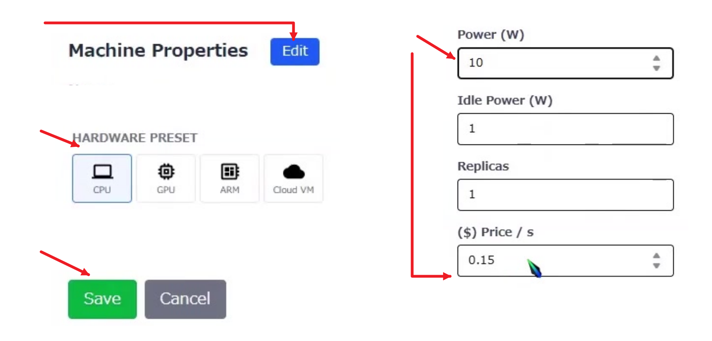
Estimated Execution Times
Select a machine and scroll down its properties panel to the EET table. This table appears after an IoT device has been added. Choose Edit to set the time, in simulated seconds, that the machine needs for each task type.
The same task type can have different EET values on different machines. For example, a task may take one second on Machine A and three seconds on Machine B. These differences affect the MEET and MECT scheduling policies.
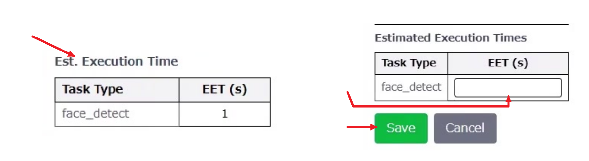
IoT devices
Configure task sources
Select an IoT device and choose Edit. Device presets include Camera, Thermostat, Smart Bulb, Smart Lock, Smart Speaker, Smartphone, Smart TV, and Vehicle Sensor. Task colors make different workloads easier to follow during a run.
- Device roleSensor, actuator, or both.
- Reading frequencyNumber of readings generated per second.
- ConnectivityThe device’s connection type.
- Energy sourceThe source that powers the device.
- Data inputThe type of input the device receives.
- Task typeA label for the work the device generates.
- Mean sizeAverage task data size in KB.
- UrgencyThe priority assigned to the work.
- SlackAdditional time allowance for the task.
- Num tasksTotal number of tasks to generate.
- Start and end timeThe simulated task-arrival window.
- DistributionThe pattern used to schedule task arrivals.
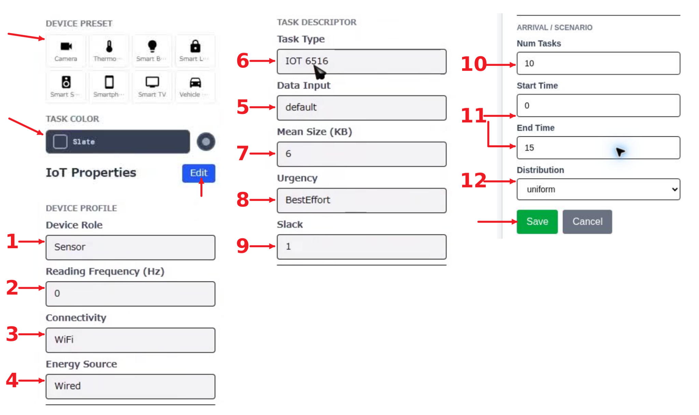
Run controls
Select Play to run the simulation, Pause to stop time while reviewing the current state, and Reset to return to the beginning and start the workload again.
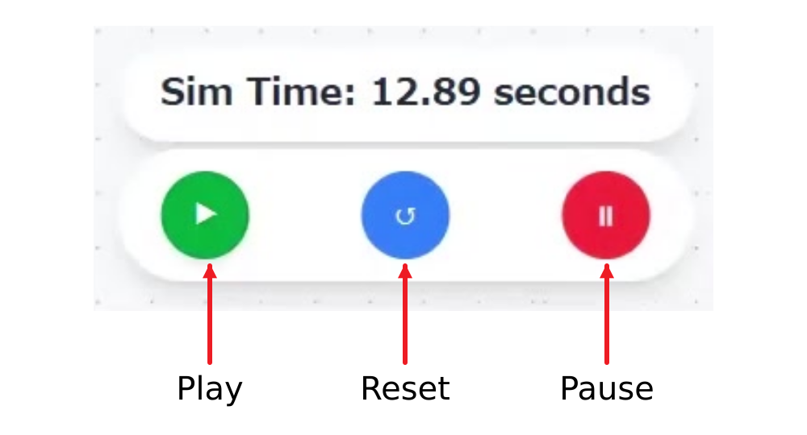
Scheduling policies
Route work through a load balancer
A load balancer decides which connected machine receives each task. Policy choice changes how work is distributed, how long tasks wait, and which resources consume energy or incur cost.
-
Connect the topology
Drag a Load Balancer onto the canvas. Connect the IoT device’s output to the load balancer’s input, then connect its output to every machine that should receive tasks.
-
Choose a policy
Select the load balancer to open its settings. Under Immediate Scheduling, choose a policy from the dropdown and select Submit.
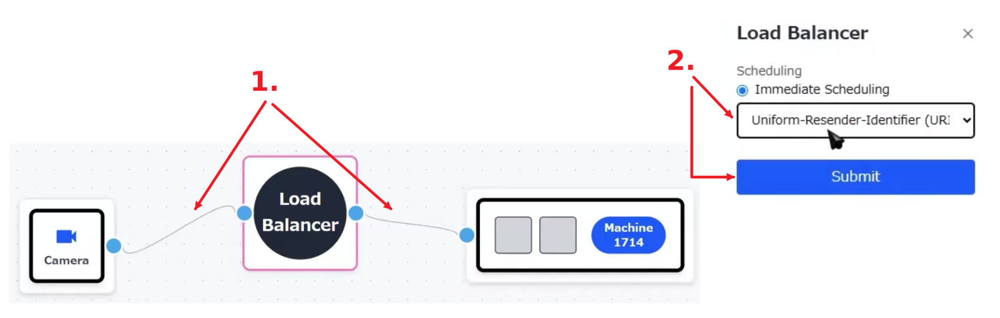
Available policies
| Policy | How it chooses a machine |
|---|---|
| First Come First Serve FCFS | Processes tasks in arrival order, preferring an idle machine and otherwise selecting the least-loaded one. |
| Minimum Expected Completion Time MECT | Chooses the machine with the smallest amount of expected work already queued. |
| Minimum Expected Execution Time MEET | Chooses the machine with the shortest EET for the incoming task type. |
| Random RAND | Randomly samples two machines and selects the one with the shorter queue. |
| URI Based Routing URI | Hashes the task type to a stable machine index while the machine configuration remains unchanged. |
| Least Connection LC | Sends the task to the machine with the shortest current queue. |
Reporting
Read simulation results
The Statistics Summary shows total tasks, assignments, work in progress, completions, deadline misses, completion rate, estimated cost, and energy consumption.
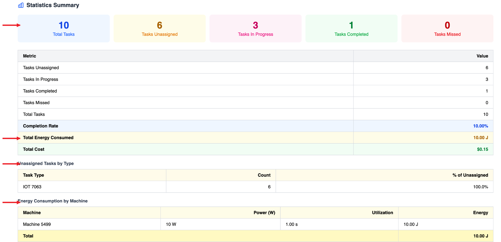
Charts and machine statistics
Charts visualize task status, assignments, energy consumption, and cost by machine. The Machine Statistics table provides the supporting power, utilization, cost, and task values.
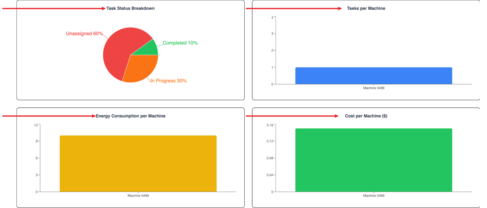
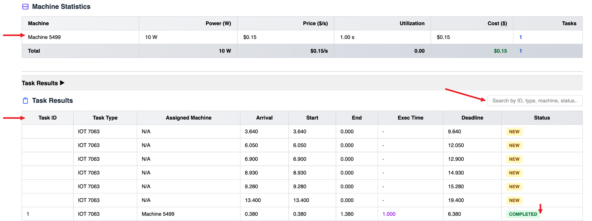
Task results and export
For each task, the report records its type, assigned machine, arrival time, start and end time, execution time, deadline, and final status. Use the combined export to download one CSV with all report data, or download individual report sections separately.
Projects
Save and exchange simulations
Open the File menu from the simulator header to save local work, reopen an existing project, or move a simulation between browsers as JSON.
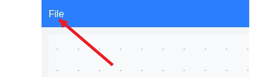
| File action | What it does |
|---|---|
| Save As | Create a named project from the current workspace. |
| Save | Update the currently open project. |
| Open | Load a previously saved simulation. |
| Export | Download the current project as JSON for sharing. |
| Import | Load a project JSON file and continue editing it. |
| Clear Workspace | Remove all nodes from the current canvas. |